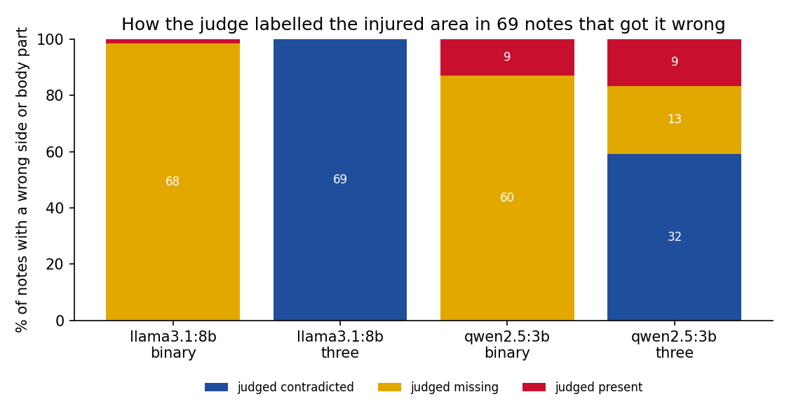

Experiment · Clinical AI · Evaluation
A third label helped a local AI name wrong body parts. Elsewhere, "contradicted" was right 8 times in 40
My local note checker could only say a fact was present or missing, so a note with the wrong knee had no label of its own. I gave it a third answer and checked what it did with it.
By Muzammal Hussain · 18 November 2026 · 4 min read
In an earlier test, small local models checked physiotherapy notes the way the MED-OMIT method uses GPT-4: is each fact of the consultation present in the note, or missing? One note said "there is no swelling" when the patient said the knee swelled, and it passed. Wrong details, like the wrong side or the wrong body part, were also the most common error in notes drafted from Roman Urdu. Here qwen2.5:3b and llama3.1:8b could also answer "contradicted".
Key findings
- llama3.1:8b named all 69 wrong injured areas as contradicted. With two labels it had already flagged 68 of them, as missing.
- It also flagged more correct notes: 58 of 101 with three labels against 36 of 101 with two (p < 0.001).
- "Contradicted" on other facts was usually the wrong name. Of 40 calls I checked by hand, 8 were real contradictions, 18 were facts simply missing from the note and 14 were correct.
- qwen2.5:3b broke its answer format. It gave usable JSON in all 200 two-label calls but in only 141 of 200 three-label calls.
What I did
No new notes were written. I reused 200 notes from earlier experiments: 80 from my 20-consultation benchmark in English and Roman Urdu, and 120 Roman Urdu notes from the side-rule test, which hold most of the wrong sides. Every consultation is fictional and written by me.
Each judge got a note and its numbered facts and answered in JSON, once with the earlier two-label prompt word for word and once with a third label, "contradicted", for the other side, a different body part, a different number or a finding reversed. Both ran through Ollama on a MacBook M4 (16 GB) at temperature 0: 800 calls in all.
For one fact, the injured area, code gives a reference: the note names the other side or a body part the patient never mentioned (69 notes, all from Roman Urdu), leaves it out (30), or gets it right (101). For every other fact there is no automatic reference, so I read a random 40 of the "contradicted" calls against the notes myself.
Results

| Judge | Labels | Wrong area flagged | Missing area flagged | Correct notes flagged | Missing red flags passed |
|---|---|---|---|---|---|
| llama3.1:8b | 2 | 68 / 69 | 23 / 30 | 36 / 101 | 98 / 224 |
| llama3.1:8b | 3 | 69 / 69 | 28 / 30 | 58 / 101 | 86 / 224 |
| qwen2.5:3b | 2 | 60 / 69 | 15 / 30 | 20 / 101 | 81 / 177 |
| qwen2.5:3b | 3 | 45 / 54 | 10 / 20 | 9 / 67 | 77 / 177 |
"Flagged" means the judge said missing or contradicted. "Missing red flags passed" counts critical facts that keyword checks found missing but the judge called present. For llama3.1:8b the third label cut these from 98 to 86 (p = 0.0005), but it called 122 of the 224 contradicted, and it called 28 of the 30 missing injured areas contradicted too. For qwen2.5:3b none of the differences was significant, and its three-label rows cover only its usable replies.
What the 40 hand-checked calls showed
| Judge | Checked | Really contradicted | Really missing | Correct in the note |
|---|---|---|---|---|
| llama3.1:8b | 23 | 5 | 11 | 7 |
| qwen2.5:3b | 17 | 3 | 7 | 7 |
| Both | 40 | 8 (20%) | 18 (45%) | 14 (35%) |
The judges called 363 facts other than the injured area contradicted. In the random 40 I checked, 26 pointed at a real problem in the note, but in most of them the problem was a fact left out, not a fact stated wrongly. In 14 the note was fine.
For a clinic this means the third label is useful where code can check it, as with the side and the body part, and unreliable where it cannot. A judge that calls almost every problem "contradicted" tells the physiotherapist that something is wrong, but not what.
Limitations
200 notes from 20 consultations I wrote, one run per judge at temperature 0. The injured-area reference is a keyword check on English words. I labelled 40 of 363 calls, alone and without a second rater. Each judge also checked notes written by the same model. All facts of a note went into one call, unlike MED-OMIT's one fact per call. qwen2.5:3b's three-label results cover only its 141 usable replies, which may not be a random subset.
What I will test next
- One fact per call, as in MED-OMIT, to see whether qwen2.5:3b keeps its format.
- A second rater for the hand labels.
Follows: Schumacher E., Rosenthal D., Nair V., Price L., Tso G., Kannan A. (2023). MED-OMIT: Extrinsically-Focused Evaluation of Omissions in Medical Summarization. arXiv:2311.08303. Models: Qwen2.5 3B and Llama 3.1 8B run locally with Ollama.